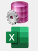
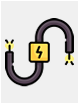
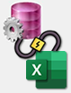
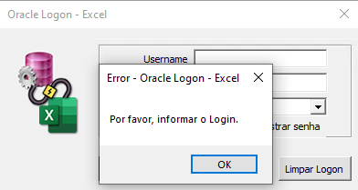
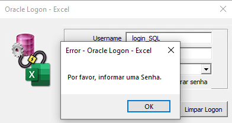
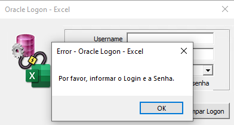
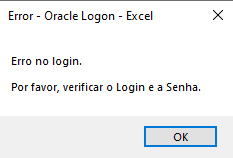

Tela de Login Oracle no Excel por VBA e formulário
O projeto foi concebido para solucionar um problema de segurança de informação, a utilização de acesso ao
banco de dados por outros, foi utilizado a linguagem VBA juntamente com as consultas SQL já existe.
A consulta é feita através do ADO com o Microsoft Visual Basic e o Visual Basic for Applications em VBA, anteriormente, a conexão do data source, username e senha era fixo de um usuário genérico, dessa forma vi uma necessidade para desenvolver uma solução, onde, cada usuário do time poderia/deveria utilizar o seu próprio username/senha para acessar o banco de dados através do Excel.
Campos do formulário
- Username: Usuário do banco de dados.
- Password: Senha do usuário do banco de
dados.
- Database: Servidor do banco de dados (tínhamos
necessidade de utilizar mais de
um banco).
- Lembrar logon: Opção para salvar as informações
de
username/senha (utilizado
principalmente onde o usuário mantem os relatórios em sua máquina e é utilizado com frequência).
- Mostrar senha: Opção para mostrar senha quando
necessário.
- OK: Armazenar os dados inseridos.
- Cancelar: Cancelar toda alteração feita na
tela.
- Limpar Logon: Limpar todas as informações de
login salvas.
Processo de criação da imagem
| Inicialmente foi pensado utilizar a logo do PL/SQL (A linguagem utilizada para acesso do banco de dados Oracle), no entanto, acabou ficando um pouco simplista, dessa forma adicionei a logo também do Excel, mas, ainda sentia falta de algo. |  |
|  | Pesquisando um pouco mais principalmente algumas referências (não tinha encontrando nenhum projeto com a mesma finalidade), encontrei um png relacionado a "conceção". |
| Por fim, com a combinação das imagens e algumas edições, cheguei a uma imagem que representa de forma eficiente a proposta do projeto. |  |
Telas de Erro
|
 Erro de username em branco |
 Erro de senha em branco |
|
 Erro de username e senha em branco |
 Erro relacionado ao login invalido no database |